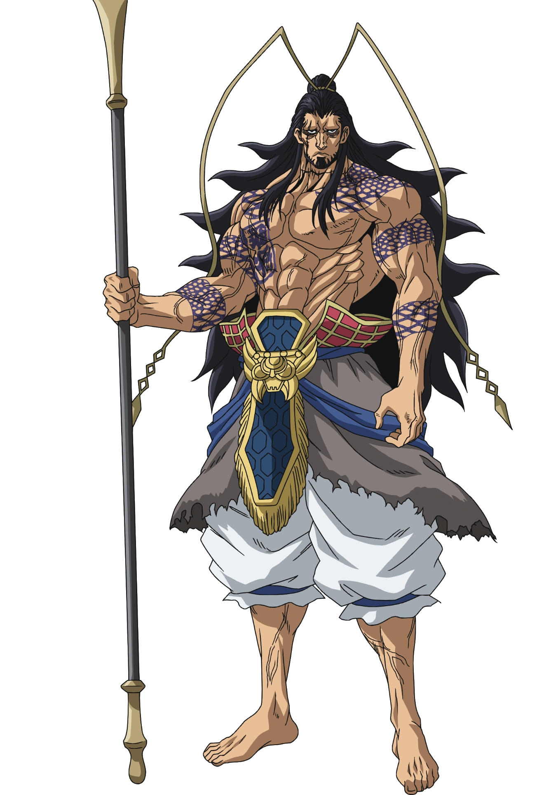
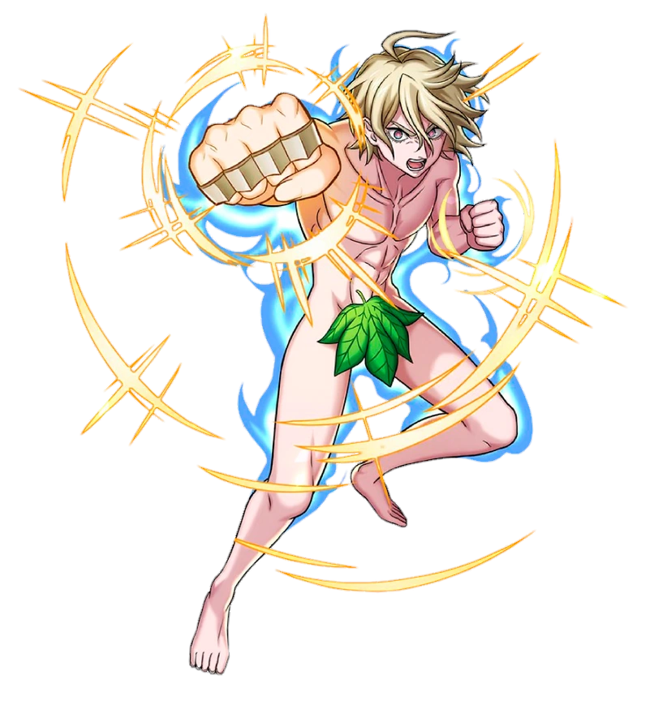
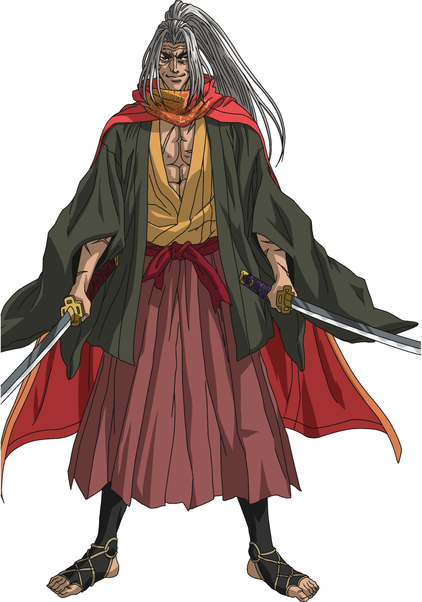
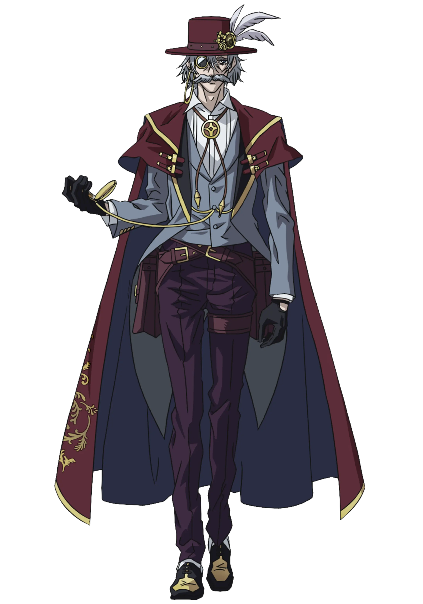
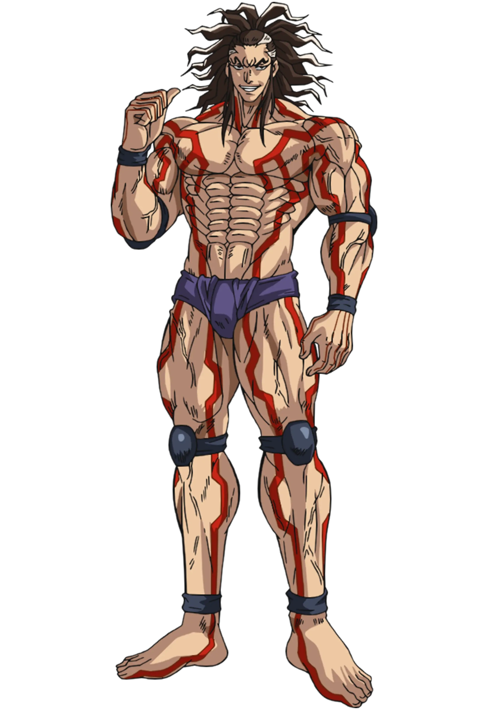
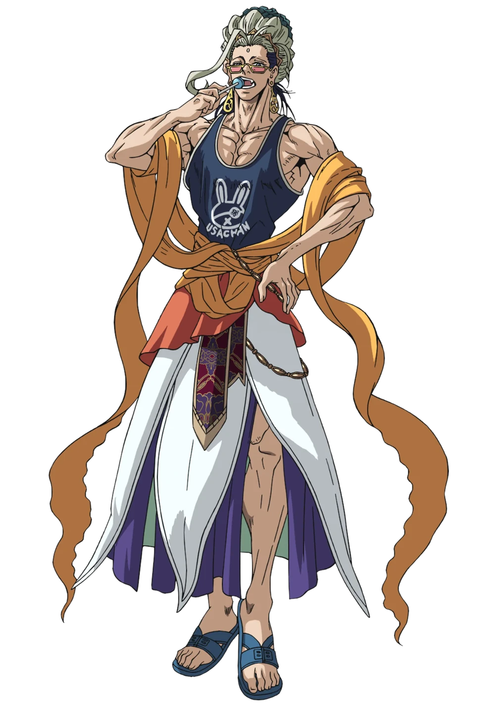

-
Lü Bu
Descrição
Lü Bu Fengxian é o representante da Humanidade na primeira rodada do Ragnarok, contra Thor. Lü Bu também é o personagem principal de seu mangá spin-off, "The Legend of Lü Bu". Lü Bu, também conhecido como "O General Voador" (飛將, Hishō)[1], vem da China Antiga e foi um senhor da guerra proeminente durante o período dos Três Reinos e é considerado por muitos como o "Guerreiro Mais Forte da História" (史上最強の戦士, Shijō Saikyō no Senshi). Lü Bu foi considerado um guerreiro violento, sanguinário e destemido, sendo visto como um "Deus da Guerra" (戦神, Ikusagami) e um "Dragão Furioso" (暴れ龍, Abare Ryū) no campo de batalha.
-
Adão
Descrição
Adão é o representante da humanidade na segunda rodada do Ragnarok, indo contra Zeus. Adão é o progenitor da Humanidade. Ele é o primeiro Humano a existir, sendo criado à imagem e semelhança dos Deuses. Após serem expulsos do Paraíso junto com sua esposa Eva, os dois desceram à Terra e passaram a dar origem à Humanidade. Acredita-se que ele seja "O Homem que Mais Despreza os Deuses" (最も神を憎む漢おとこ, Mottomo Kami o Nikumu Otoko) e "O Sobrevivente Supremo" (正真正銘の拳骨ゲンコツ主義, Shōshinshō Shumei no Genkotsu gi).
-
Sasaki Kojiro
Descrição
Kojiro Sasaki is Humanity's representative in the third round of Ragnarok, going against Poseidon. Kojiro is a famed swordsman hailing from feudal Japan, being referred to as "History's Strongest Loser" (史上最強の敗者ルーザー, Shijōsaikyō no Rūzā) and later "Humanity's Strongest Swordsman" (人類史上最強の剣士, Jinrui Shijōsaikyō no Kenshi).
-
Jack o Estripador
Descrição
Jack, o Estripador, é o representante da humanidade na quarta rodada do Ragnarok, enfrentando Hércules. Jack também é o personagem principal de seu mangá spin-off, "Jack the Ripper's Case Files". Jack é um serial killer vindo da Grã-Bretanha do final do século 19 e uma figura muito importante na história de Londres, sendo considerado "o serial killer mais infame da humanidade" (人類史上最も著名な殺人鬼, Jinrui Shijō Mottomo Chomeina Satsujinki).
-
Raiden Tameemon
Descrição
Raiden Tameemon (birth name Tarōkichi Seki) is Humanity's representative in the fifth round of Ragnarok, going up against Shiva. Raiden Tameemon, also known as the "Peerless Rikishi" (無む類るい力りき士し, Murui Rikishi) has the strongest muscles in the history of mankind and was a famous Japanese sumo wrestler; considered to be the best of all time.
-
Buda
Descrição
Buda é o representante da Humanidade na sexta rodada do Ragnarok, indo contra Zerofuku, e mais tarde Hajun, apesar de inicialmente ter sido listado como um representante dos Deuses. Buda é uma divindade proeminente no Panteão Dármico, sendo o fundador do Budismo, um dos Quatro Sábios, bem como um dos poucos seres divinos, ao lado de Hércules e das Valquírias, que não são a favor da destruição da Humanidade. Buda era anteriormente um humano chamado Gautama Siddhartha (ゴータマ・シッダールタ, Gōtama Shiddāruta) e uma famosa figura filosófica vinda do Nepal, antes de atingir a iluminação e eventualmente ascender à divindade.